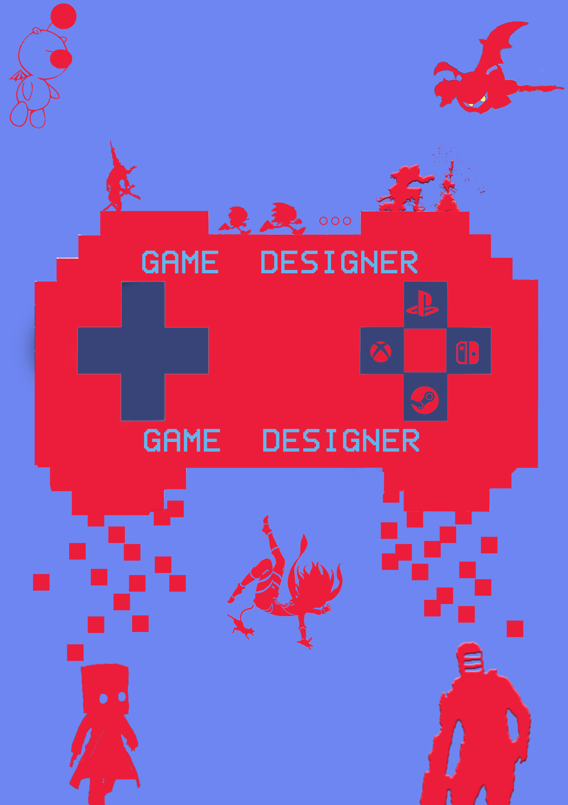

Pour mon projet de portfolio, j'ai voulu mettre en avant un projet réalisé hors du cadre universitaire afin de montrer ma créativité et mon expérience dans ce domaine.
En effectuant des recherches sur des travaux liés au CONCEPT ART et au DIGITAL ART, je suis tombé sur une vidéo présentant une technique souvent utilisée pour réaliser des concepts art ou des peintures numériques, appelée le PHOTOBASHING.
Cette technique consiste à utiliser des éléments, tels que des photos par exemple, et à partir de ces derniers, à les disposer d'une manière spécifique pour créer une mise en scène ou même des personnages, tout en repassant dessus avec un pinceau pour créer une illustration plus détaillée et artistique.
J'ai donc tenté de réaliser une illustration sur PHOTOSHOP qui s'inspirerait de cette méthode, à l'aide de tutoriels et de guides qui montrent la manière dont il faut procéder pour réaliser ce genre de travaux.
Pour cette première illustration utilisant la méthode du PHOTOBASHING, j'ai choisi de m'inspirer de KINGDOM HEARTS IV, un jeu faisant partie d'une saga à laquelle j'ai beaucoup joué et dont j'attends la sortie avec impatience.
Pour parvenir à réaliser cette affiche, j'ai utilisé de nombreuses photos prises dans les rues de TOKYO. Je les ai ensuite assemblées et retouchées pour que l'environnement soit le plus visuellement attrayant possible.
J'ai par la suite ajouté un filtre de découpe sur l'ensemble de l'illustration pour obtenir un rendu homogène.
Pendant ma deuxième année en BUT MMI, j’ai eu l’occasion d’améliorer mes compétences en Design Graphique, que j’avais déjà acquises lors de ma toute première année au sein de la formation, grâce notamment à un projet de charte graphique.
Étant donné que je suis actuellement dans le parcours Développement Web, les cours sont plus consacrés à la création d'applications et de sites web qu'à des projets en lien avec le domaine du design graphique.
Pour mettre en avant mes compétences dans le domaine de la conception graphique et autres éléments visuels, j’ai donc décidé de créer un logo, ainsi qu’une charte graphique à l’aide des logiciels de la suite Adobe : Illustrator, Photoshop et InDesign.
Le logo est celui d’une marque fictive de produits de luxe.
Voir la charte graphique complète (PDF)
Même avant de rejoindre cette formation, j'ai toujours été plus intéressé par la
partie Création Numérique/Design Graphique qu'elle propose.
Cela ne m'a cependant pas empêché de développer des compétences dans la partie Développement Web de la formation
et afin de montrer celles que je possède, j'ai pris la décision de réaliser mon portfolio
entièrement en HTML et CSS, qui sont les principaux langages utilisés pour créer des sites web.
J'ai également utilisé JavaScript pour toute la partie qui concerne les interactions du site, telles
que les images cliquables et les boutons.
N'ayant pas terminé ma deuxième année au sein de la formation, il ne s'agit que d'une version semi-complète du portfolio. Des changements seront apportés à ce dernier dans les semaines qui suivent.

Pour ce projet, j'ai simplement voulu créer une affiche en lien avec le métier de Game Designer.
C'est au moment où j'ai trouvé l'inspiration que
je me suis dit que ce serait intéressant de faire ce poster.
Je n'ai pas eu d'objectif en tête lorsque j'ai réalisé cette affiche.
Voulant devenir un GAME DESIGNER et étant passioné par la modélisation 3D, j'ai moi meme créer mon propre personnage en 3d
Lien drive vers l'objet 3D